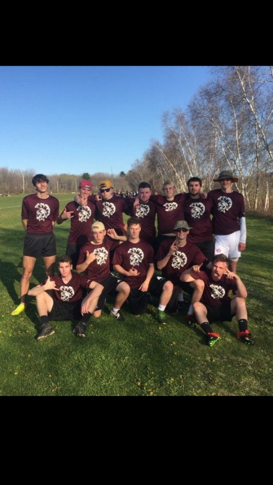

home

During my Junior and Senior year at Thornton Academy, I played ultimate frisbee through the Maine Ultimate program. Me and my friends had started playing pick up frisbee three years earlier and Thornton had never had a frisbee team. My friend reached out too Maine Ultimate and we got together enough players to field a team. Our first year we played in class B and ended with a much better record than our second year we we played class A. Both years of playing organized Ultimate Frisbee were fun, but looking back the best times were the early pickup games we played between friends on a field within walking distance of all our houses.